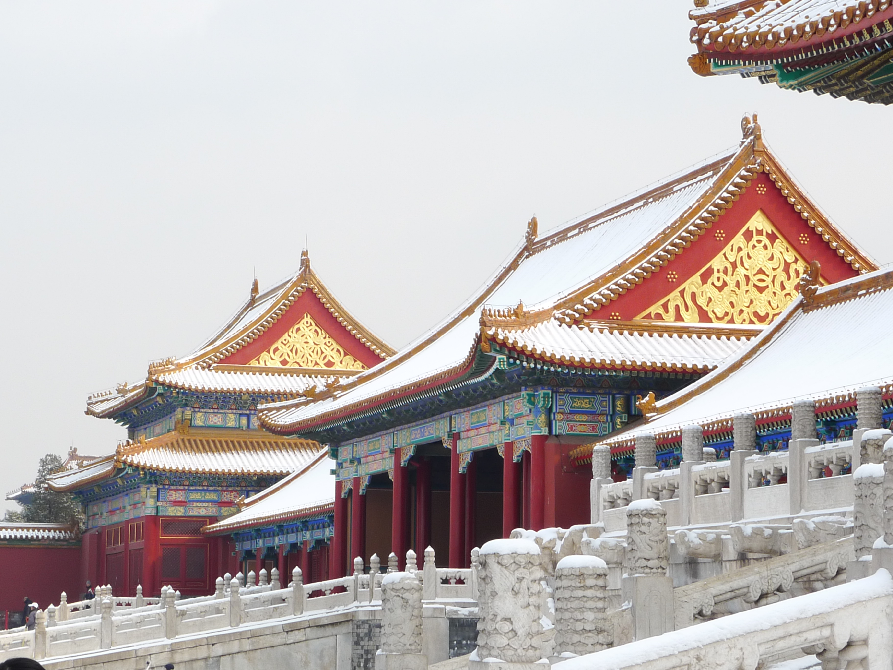

The Forbidden City is a palace complex in Dongcheng District, Beijing, China, at the center of the Imperial City of Beijing. It is surrounded by numerous opulent imperial gardens and temples including the 22 ha (54-acre) Zhongshan Park, the sacrificial Imperial Ancestral Temple, the 69 ha (171-acre) Beihai Park, and the 23 ha (57-acre) Jingshan Park. It includes the Palace Museum containing parts of the former Imperial art collection. The Forbidden City was constructed from 1406 to 1420, and was the former Chinese imperial palace and winter residence of the Emperor of China from the Ming dynasty (since the Yongle Emperor) to the end of the Qing dynasty, between 1420 and 1924. The Forbidden City served as the home of Chinese emperors and their households and was the ceremonial and political center of the Chinese government for over 500 years. Since 1925, the Forbidden City has been under the charge of the Palace Museum, whose extensive collection of artwork and artifacts were built upon the imperial collections of the Ming and Qing dynasties. The Forbidden City was declared a World Heritage Site in 1987. The complex consists of 980 buildings, encompassing 8,886 rooms and covering 720,000 m2 (72 ha)/178 acres. The palace exemplifies the opulence of the residences of the Chinese emperor and the traditional Chinese palatial architecture, and has influenced cultural and architectural developments in East Asia and elsewhere. It is listed by UNESCO as the largest collection of preserved ancient wooden structures in the world. Since 2012, the Forbidden City has seen an average of 14 million visitors annually, and received more than 19 million visitors in 2019. In 2018, the Forbidden City's market value was estimated at 70 billion USD, making it both the world's most valuable palace and the most valuable piece of real estate anywhere in the world. Some sources describe it as the largest palace in the world still in existence, but other Chinese imperial residences far exceed it in size, namely the 6.1 km2 (610 ha) Zhongnanhai which lies just west of the Forbidden City, the 2.9 km2 (290 ha) Summer Palace in Haidian District, Beijing, and the 5.6 km2 (560 ha) Chengde Mountain Resort in Chengde, Hebei Province. The Forbidden City in Beijing is one of the largest and most well-preserved ancient wooden structures in the world. It was listed as the first batch of national key cultural relics in 1961.
The common English name "Forbidden City" is a translation of the Chinese name Zijin Cheng. The name Zijin Cheng first formally appeared in 1576. Another English name of similar origin is "Forbidden Palace". The name "Zijin Cheng" is a name with significance on many levels. Zi, or "Purple", refers to the North Star, which in ancient China was called the Ziwei Star, and in traditional Chinese astrology was the heavenly abode of the Celestial Emperor. The surrounding celestial region, the Ziwei Enclosure was the realm of the Celestial Emperor and his family. The Forbidden City, as the residence of the terrestrial emperor, was its earthly counterpart. Jin means "the place where the Celestial Emperor lives" not "forbidden".[verification needed] Cheng means a city. Today, the site is most commonly known in Chinese as Gùgōng , which means the "Former Palace". The museum which is based in these buildings is known as the "Palace Museum" In Ming and Qing, the Forbidden City was also known as Da Nei or "Palace City" .
Aerial view of the Forbidden City (1900–1901). When Hongwu Emperor's son Zhu Di became the Yongle Emperor, he moved the capital from Nanjing to Beijing, and construction began in 1406 on what would become the Forbidden City. Construction lasted 14 years and required more than a million workers. Material used include whole logs of precious Phoebe zhennan wood (Chinese: 楠木; pinyin: nánmù) found in the jungles of south-western China, and large blocks of marble from quarries near Beijing. The floors of major halls were paved with "golden bricks" (Chinese: 金磚; pinyin: jīnzhuān), specially baked paving bricks from Suzhou. From 1420 to 1644, the Forbidden City was the seat of the Ming dynasty. In April 1644, it was captured by rebel forces led by Li Zicheng, who proclaimed himself emperor of the Shun dynasty. He soon fled before the combined armies of former Ming general Wu Sangui and Manchu forces, setting fire to parts of the Forbidden City in the process. By October, the Manchus had achieved supremacy in northern China, and a ceremony was held at the Forbidden City to proclaim the young Shunzhi Emperor as ruler of all China under the Qing dynasty. The Qing rulers changed the names on some of the principal buildings, to emphasise "Harmony" rather than "Supremacy", made the name plates bilingual (Chinese and Manchu), and introduced Shamanist elements to the palace. In 1860, during the Second Opium War, Anglo-French forces took control of the Forbidden City and occupied it until the end of the war. In 1900 Empress Dowager Cixi fled from the Forbidden City during the Boxer Rebellion, leaving it to be occupied by forces of the treaty powers until the following year. After being the home of 24 emperors – 14 of the Ming dynasty and 10 of the Qing dynasty – the Forbidden City ceased being the political centre of China in 1912 with the abdication of Puyi, the last Emperor of China. Under an agreement with the new Republic of China government, Puyi remained in the Inner Court, while the Outer Court was given over to public use, until he was evicted after a coup in 1924. The Palace Museum was then established in the Forbidden City in 1925. In 1933, the Japanese invasion of China forced the evacuation of the national treasures in the Forbidden City. Part of the collection was returned at the end of World War II, but the other part was evacuated to Taiwan in 1948 under orders of Chiang Kai-shek, whose Kuomintang was losing the Chinese Civil War. This relatively small but high quality collection was kept in storage until 1965, when it again became public, as the core of the National Palace Museum in Taipei. After the establishment of the People's Republic of China in 1949, some damage was done to the Forbidden City as the country was swept up in revolutionary zeal. During the Cultural Revolution, however, further destruction was prevented when Premier Zhou Enlai sent an army battalion to guard the city. The Forbidden City was declared a World Heritage Site in 1987 by UNESCO as the "Imperial Palace of the Ming and Qing Dynasties", due to its significant place in the development of Chinese architecture and culture. It is currently administered by the Palace Museum, which is carrying out a sixteen-year restoration project to repair and restore all buildings in the Forbidden City to their pre-1912 state. The Shoukang Palace was also officially exhibited on August 15, 2013, after being displayed in its original state. And the sculpture museum located in the Cining Palace opened on May 31, 2015. And according to the 2015 scale, the Forbidden City will be 76% open by 2020. The Forbidden City is undergoing restoration of cultural relics and monuments, environmental improvement, and expansion of open areas for display and exhibition. On November 23, 2014, the Beijing Imperial Palace mascot debuted to the public, the mascot is derived from the traditional Chinese image of the auspicious dragon and phoenix, respectively, the dragon "strong" and phoenix "beautiful". 2015 October 11, the Palace Museum officially to the audience The opening of new areas such as the Cining Palace area, the Ngamen Yanyin Building area, and the Donghua Gate, which increased the open area of the Palace from 52% to 65%.
The Forbidden City is a rectangle, measuring 961 m (3,153 ft) from north to south and 753 m (2,470 ft) from east to west. It consists of 980 surviving buildings with 8,886 bays of rooms. The layout of the Forbidden City activated and protected the imperial code of ethics as a physical installation. The courtyard was built on a massive, luxurious scale but it has the appearance of an ordinary quadrangle courtyard. A common myth states that there are 9,999 rooms including antechambers, based on oral tradition, and it is not supported by survey evidence. The Forbidden City was designed to be the centre of the ancient, walled city of Beijing. It is enclosed in a larger, walled area called the Imperial City. The Imperial City is, in turn, enclosed by the Inner City; to its south lies the Outer City. The Forbidden City remains important in the civic scheme of Beijing. The central north–south axis remains the central axis of Beijing. This axis extends to the south through Tiananmen gate to Tiananmen Square, the ceremonial centre of the People's Republic of China, and on to Yongdingmen. To the north, it extends through Jingshan Hill to the Bell and Drum Towers. This axis is not exactly aligned north–south, but is tilted by slightly more than two degrees. Researchers now believe that the axis was designed in the Yuan dynasty to be aligned with Xanadu, the other capital of their empire. a. Walls and gates The Forbidden City is surrounded by a 7.9 m (26 ft) high city wall and a 6 m (20 ft) deep by 52 m (171 ft) wide moat. The walls are 8.62 m (28.3 ft) wide at the base, tapering to 6.66 m (21.9 ft) at the top. These walls served as both defensive walls and retaining walls for the palace. They were constructed with a rammed earth core, and surfaced with three layers of specially baked bricks on both sides, with the interstices filled with mortar. At the four corners of the wall sit towers (E) with intricate roofs boasting 72 ridges, reproducing the Pavilion of Prince Teng and the Yellow Crane Pavilion as they appeared in Song dynasty paintings. These towers are the most visible parts of the palace to commoners outside the walls, and much folklore is attached to them. According to one legend, artisans could not put a corner tower back together after it was dismantled for renovations in the early Qing dynasty, and it was only rebuilt after the intervention of carpenter-immortal Lu Ban. The wall is pierced by a gate on each side. At the southern end is the main Meridian Gate (A). To the north is the Gate of Divine Might (B), which faces Jingshan Park. The east and west gates are called the "East Glorious Gate" (D) and "West Glorious Gate" (C). All gates in the Forbidden City are decorated with a nine-by-nine array of golden door nails, except for the East Glorious Gate, which has only eight rows. The Meridian Gate has two protruding wings forming three sides of a square (Wumen, or Meridian Gate, Square) before it.[49] The gate has five gateways. The central gateway is part of the Imperial Way, a stone flagged path that forms the central axis of the Forbidden City and the ancient city of Beijing itself, and leads all the way from the Gate of China in the south to Jingshan in the north. Only the Emperor may walk or ride on the Imperial Way, except for the Empress on the occasion of her wedding, and successful students after the Imperial Examination. b. Outer Court or the Southern Section Traditionally, the Forbidden City which is divided into two parts has the Outer Court (外朝) or Front Court (前朝) includes the southern sections, and was used for ceremonial purposes and the Inner Court (内廷) or Back Palace (后宫) includes the northern sections, and was the residence of the Emperor and his family, and was used for day-to-day affairs of state. (The approximate dividing line shown as red dash in the plan above.) Generally, the Forbidden City has three vertical axes. The most important buildings are situated on the central north–south axis. Entering from the Meridian Gate, one encounters a large square, pierced by the meandering Inner Golden Water River, which is crossed by five bridges. Beyond the square stands the Gate of Supreme Harmony (F). Behind that is the Hall of Supreme Harmony Square. A three-tiered white marble terrace rises from this square. Three halls stand on top of this terrace, the focus of the palace complex. From the south, these are the Hall of Supreme Harmony (太和殿), the Hall of Central Harmony (中和殿), and the Hall of Preserving Harmony (保和殿). The Hall of Supreme Harmony (G) is the largest, and rises some 30 m (98 ft) above the level of the surrounding square. It is the ceremonial centre of imperial power, and the largest surviving wooden structure in China. It is nine bays wide and five bays deep, the numbers 9 and 5 being symbolically connected to the majesty of the Emperor. Set into the ceiling at the centre of the hall is an intricate caisson decorated with a coiled dragon, from the mouth of which issues a chandelier-like set of metal balls, called the "Xuanyuan Mirror". In the Ming dynasty, the Emperor held court here to discuss affairs of state. During the Qing dynasty, as Emperors held court far more frequently, a less ceremonious location was used instead, and the Hall of Supreme Harmony was only used for ceremonial purposes, such as coronations, investitures, and imperial weddings. The Hall of Central Harmony is a smaller, square hall, used by the Emperor to prepare and rest before and during ceremonies. Behind it, the Hall of Preserving Harmony, was used for rehearsing ceremonies, and was also the site of the final stage of the Imperial examination. All three halls feature imperial thrones, the largest and most elaborate one being that in the Hall of Supreme Harmony. At the centre of the ramps leading up to the terraces from the northern and southern sides are ceremonial ramps, part of the Imperial Way, featuring elaborate and symbolic bas-relief carvings. The northern ramp, behind the Hall of Preserving Harmony, is carved from a single piece of stone 16.57 m (54.4 ft) long, 3.07 m (10.1 ft) wide, and 1.7 m (5.6 ft) thick. It weighs some 200 tonnes and is the largest such carving in China. The southern ramp, in front of the Hall of Supreme Harmony, is even longer, but is made from two stone slabs joined – the joint was ingeniously hidden using overlapping bas-relief carvings, and was only discovered when weathering widened the gap in the 20th century. The stone slabs were likely transported from a quarry via ice sledge along an ice path lubricated by well water en route. In the south west and south east of the Outer Court are the halls of Military Eminence (H) and Literary Glory (J). The former was used at various times for the Emperor to receive ministers and hold court, and later housed the Palace's own printing house. The latter was used for ceremonial lectures by highly regarded Confucian scholars, and later became the office of the Grand Secretariat. A copy of the Siku Quanshu was stored there. To the north-east are the Southern Three Places (南三所) (K), which was the residence of the Crown Prince. c. Inner Court or the Northern Section The Inner Court is separated from the Outer Court by an oblong courtyard lying orthogonal to the city's main axis. It was the home of the Emperor and his family. In the Qing dynasty, the Emperor lived and worked almost exclusively in the Inner Court, with the Outer Court used only for ceremonial purposes. Back Three Palaces At the centre of the Inner Court is another set of three halls (L). From the south, these are Palace of Heavenly Purity (乾清宮) Hall of Union Palace of Earthly Tranquility Smaller than the Outer Court halls, the three halls of the Inner Court were the official residences of the Emperor and the Empress. The Emperor, representing Yang and the Heavens, would occupy the Palace of Heavenly Purity. The Empress, representing Yin and the Earth, would occupy the Palace of Earthly Tranquility. In between them was the Hall of Union, where the Yin and Yang mixed to produce harmony. The throne in the Palace of Heavenly Purity The Nine Dragons Screen in front of the Palace of Tranquil Longevity The Imperial Garden The Palace of Heavenly Purity is a double-eaved building, and set on a single-level white marble platform. It is connected to the Gate of Heavenly Purity to its south by a raised walkway. In the Ming dynasty, it was the residence of the Emperor. However, beginning from the Yongzheng Emperor of the Qing dynasty, the Emperor lived instead at the smaller Hall of Mental Cultivation (N) to the west, out of respect to the memory of the Kangxi Emperor. The Palace of Heavenly Purity then became the Emperor's audience hall. A caisson is set into the roof, featuring a coiled dragon. Above the throne hangs a tablet reading "Justice and Honour" (Chinese: 正大光明; pinyin: zhèngdàguāngmíng). The Palace of Earthly Tranquility (坤寧宮) is a double-eaved building, 9 bays wide and 3 bays deep. In the Ming dynasty, it was the residence of the Empress. In the Qing dynasty, large portions of the Palace were converted for Shamanist worship by the new Manchu rulers. From the reign of the Yongzheng Emperor, the Empress moved out of the Palace. However, two rooms in the Palace of Earthly Harmony were retained for use on the Emperor's wedding night. Between these two palaces is the Hall of Union, which is square in shape with a pyramidal roof. Stored here are the 25 Imperial Seals of the Qing dynasty, as well as other ceremonial items. Behind these three halls lies the Imperial Garden (M). Relatively small, and compact in design, the garden nevertheless contains several elaborate landscaping features. To the north of the garden is the Gate of Divine Might. Directly to the west is the Hall of Mental Cultivation (N). Originally a minor palace, this became the de facto residence and office of the Emperor starting from Yongzheng. In the last decades of the Qing dynasty, empresses dowager, including Cixi, held court from the eastern partition of the hall. Located around the Hall of Mental Cultivation are the offices of the Grand Council and other key government bodies. The north-eastern section of the Inner Court is taken up by the Palace of Tranquil Longevity (寧壽宮) (O), a complex built by the Qianlong Emperor in anticipation of his retirement. It mirrors the set-up of the Forbidden City proper and features an "outer court", an "inner court", and gardens and temples. The entrance to the Palace of Tranquil Longevity is marked by a glazed-tile Nine Dragons Screen.  d. Six Western and Six Eastern Palaces To the west and to the east of the three main halls of the Inner Court are the Western Palaces (Xiliugong) and the Eastern Palaces (Dongliugong). These palaces were the residences of the imperial consorts. Six Palaces lay to the West and six to the East of the three main halls, hence the name. The architecture of the 12 Palaces, connected by passageways, is more or less the same. The Western and Eastern Palaces each have a layout of three palaces on either side of an alley that runs from north to south. Every Palace has its own courtyards, main halls, and side-halls. The main halls stand in the middle and the side-halls are in the east and west. The front courtyard and its main hall was used for receptions, while the back courtyard and its main hall served as living quarters. A consort with the rank of Concubine and above was given a residence in the main sections of a Palace and was the manager of that Palace, an honor in itself. Lower ranking consorts (Noble Ladies and below) lived in the side-hall of the Palaces and were supervised by the higher ranking consort. The 12 Palaces were the place where many of the Qing emperors were born and grew up, and they formed the daily life of the imperial family. During the late Qing era, Empress Dowager Cixi resided in one of the Western Palaces and became known as the "Western empress". Her co-regent Empress Dowager Ci'an lived in one of the Eastern Palaces and was thus known as the "Eastern empress". The name of the Palaces were: Western Six Palaces Palace of Eternal Longevity (永寿宫) Hall of the Supreme Principle (太极殿) Palace of Eternal Spring (长春宫) Palace of Earthly Honour (翊坤宫) Palace of Gathering Elegance (储秀宫) Palace of Universal Happiness (咸福宫) Eastern Six Palaces Palace of Great Benevolence (景仁宫) Palace of Heavenly Grace (承乾宫) Palace of Accumulated Purity (锺粹宫) Palace of Prolonged Happiness (延禧宫) Palace of Great Brilliance (景阳宫) Palace of Eternal Harmony (永和宫) Cining Palace and Shoukang Palace To the west of the Hall of Mental Cultivation (N) in the western area of the Inner Court is Cining Palace (Palace of Compassion and Tranquility) and Shoukang Palace (Palace of Longevity and Good Health). The palaces were the residences of widowed consorts of previous emperors. In accordance with feudal manners, emperors should not live with the wives of late emperors, so they lived in this separate area of the Inner Court. The Cining palace is bigger and older than Shoukang Palace which is located to the west of Cining Palace. To the south of Cining Palace is Cining garden.